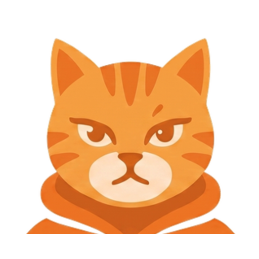
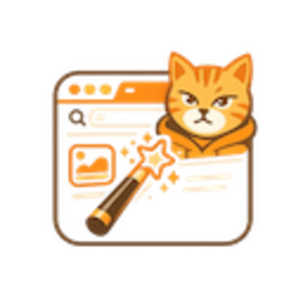

短剧猫品牌资产
静态 PNG / SVG 包装 / 零依赖 Web Component 动画预览。上传整个目录到 OSS 后，本页可直接作为调试入口。
动画预览
静态资产
player-cat

cat-head
cat-search引用示例
<script src="./anime/shortdrama-cat-motion.js"></script>
<shortdrama-cat-motion variant="player-cat" motion="enter" size="lg"></shortdrama-cat-motion>